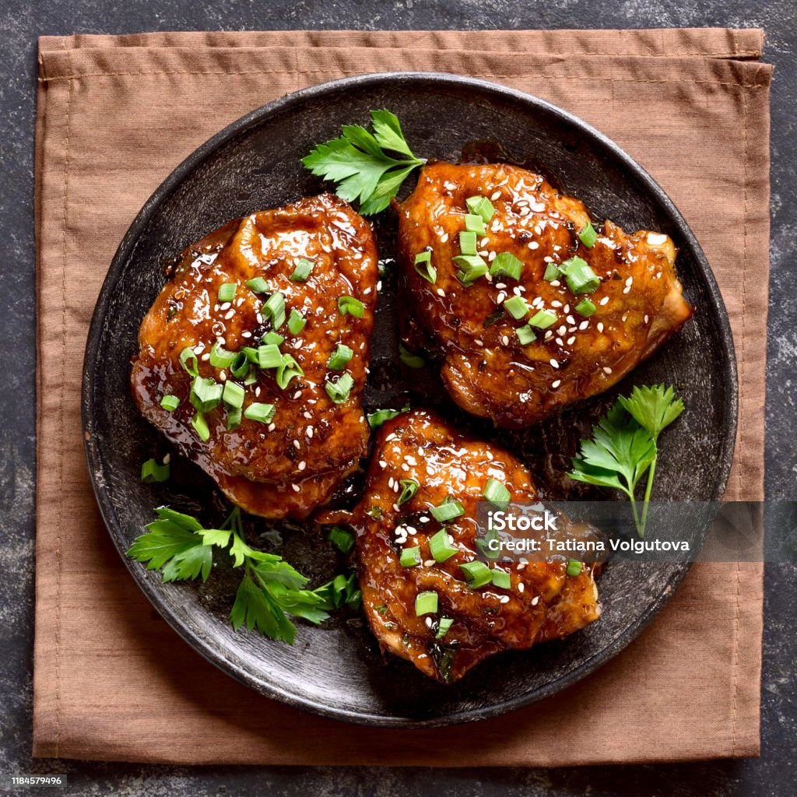

Shoyu Chicken

Description
Shoyu chicken is a popular Hawaiian dish often served with rice. The word shoyu is Japanese for soy sauce.
Let the chicken soak in the marinade for at least an hour; the longer the better.
Prep Time is 10 minutes
Cooktime is 30 minutes
Total servings is 12
Ingredients
- 1 cup soy sauce
- 1 cup brown sugar
- 1 cup water
- 1 onion, chopped
- 4 cloves garlic, minced
- 1 tablespoon grated fresh ginger root
- 1 tablespoon ground black pepper
- 1 tablespoon dried oregano
- 1 teaspoon crushed red pepper flakes
(Optional)
- 1 teaspoon ground cayenne pepper
(Optional)
- 1 teaspoon ground paprika
(Optional)
- 5 pounds skinless chicken thighs
Steps
- Whisk soy sauce, brown sugar, water, onion, garlic, ginger, black pepper,
oregano, red pepper flakes, cayenne pepper, and paprika together in a large
glass or ceramic bowl. Add chicken thighs and toss to coat evenly. Cover the
bowl with plastic wrap; marinate chicken in the refrigerator for at least 1 hour.
- Preheat an outdoor grill to medium heat. Lightly oil the grate.
- Remove chicken thighs from marinade; discard remaining marinade.
- Grill chicken thighs on the preheated grill until no longer pink in the center and
the juices run clear, about 15 minutes per side. An instant-read thermometer
inserted into the center should read at least 165 degrees F (74 degrees C).
Home Page